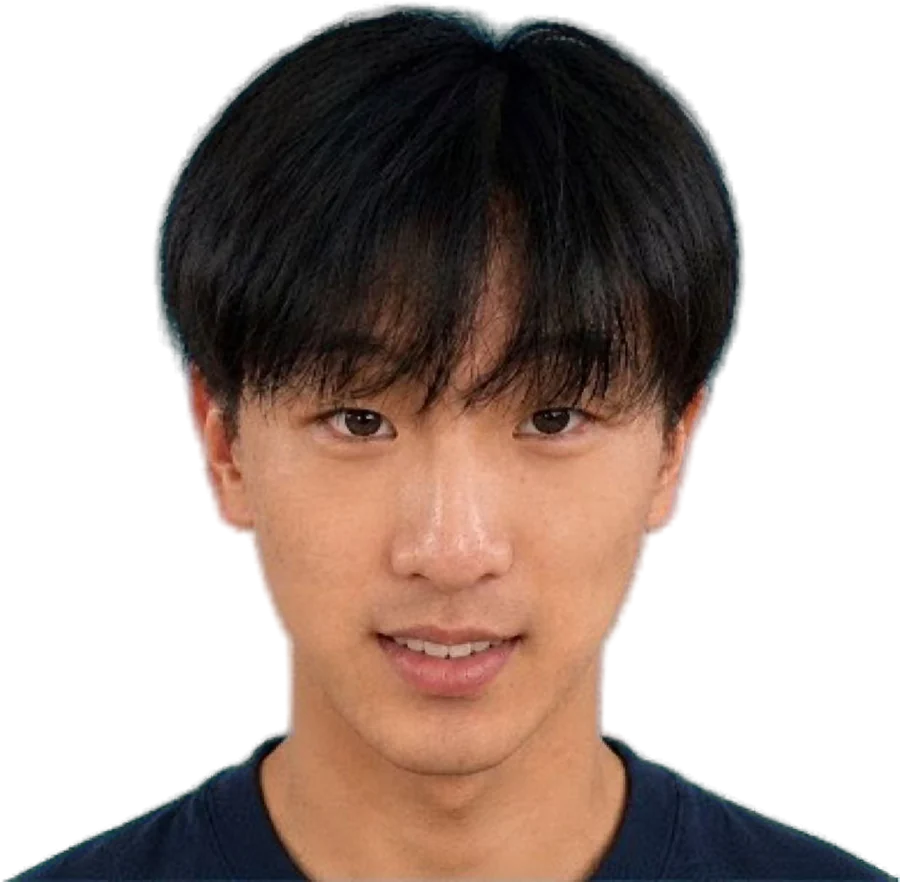

Oct 2026
Paper accepted at NeurIPS论文被 NeurIPS 录用
“Freeze the family before responses are read, never shrink it.”“在看到结果之前冻结检验家族，并且永不缩小它。”

Portrait goes heresince 2025 · class of 20282025 年入学 · 2028 届
I study economics at UC Davis and spend most of my time on quantitative research: building factor and forecasting systems, then trying to break them before believing them. This year that became a NeurIPS workshop paper, a financial-audit system, merged fixes in Hugging Face transformers, and a policy paper on China's AI-audio standards.
我在加州大学戴维斯分校读经济学，大部分时间在做量化研究：搭因子和预测系统，然后在相信它之前先想办法推翻它。今年这些工作变成了一篇 NeurIPS 研讨会论文、一套财报审计核验系统、合并进 Hugging Face transformers 的修复，以及一篇关于中国 AI 音频标准的政策论文。
On the desk看研究“Freeze the family before responses are read, never shrink it.”“在看到结果之前冻结检验家族，并且永不缩小它。”
A linkbase walk that resolves silently to nothing looks like a modelling problem. It isn't.静默返回空的解析看起来像建模问题，其实不是。
Find it, reproduce it, get assigned, then fix it.先找到，再复现，被分配后再修。
69 requirements, two independent coders, 98.6% agreement.69 条要求，两位独立编码员，一致率 98.6%。
Looking for internships in quantitative research, investment research, data science in finance, and policy or economic analysis. Off-cycle terms are fine.
在找量化研究、投资研究、金融数据科学、政策与经济分析方向的实习，学期内的 off-cycle 也可以。